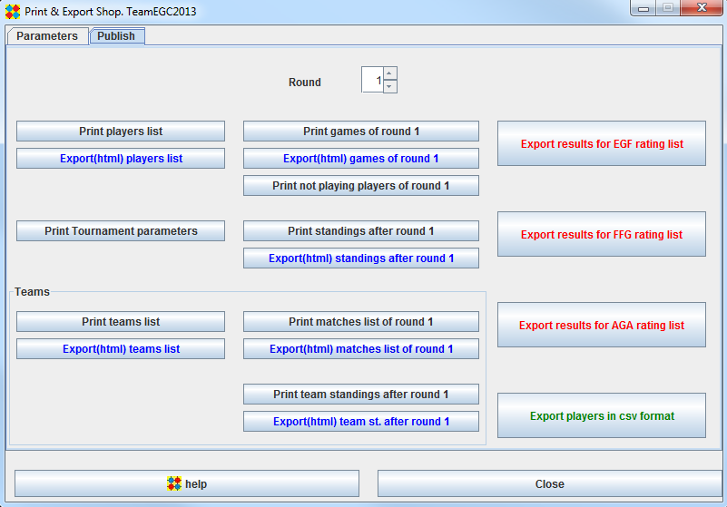
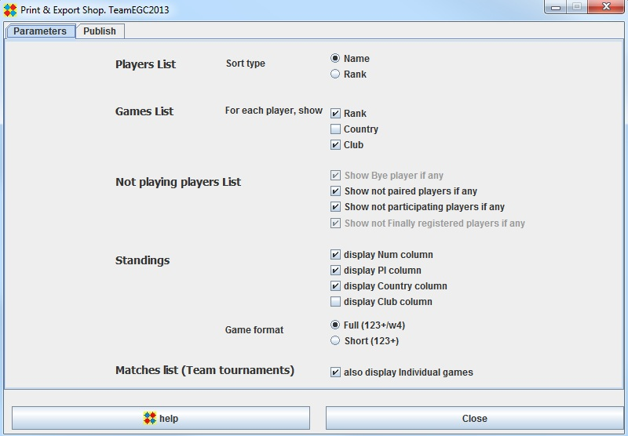

Print and Export Shop
Two tabs in the frame :
- Publish : launches Print or Export tournament elements
- Parameters : Define layout elements
Publish

Print... buttons
Data is automatically formatted according to parameters as defined in Parameters tab
Export(html)... buttons
The produced html file is, by default stored into the export/html directory.
It is associated with a style sheet. A default style sheet is supplied : current.css. The user can supply his own style sheet.
If you transfer the html file elsewhere, for instance to a web site, also transfer the current.css file.
Character encoding is "UTF-8".
Export results for EGF rating-list
The generated file respects h9 format.
Spaces inside a player name or first name are replaced by "_"
Total name + first name length is limited to 30
Character set is "ISO-8859-15".
Export results for FFG rating-list
The generated file respects Tou format.
Spaces inside a player name or first name are replaced by "_"
Total name + first name length is limited to 25
Character set is "ISO-8859-15".
Export results for AGA rating-list
The generated file respects AGA standard ratings submission format.
For players without an AGA id, dummy AGA ids are generated in the "99xxx" range.
Character set is "ISO-8859-15".
Export players in csv format
The generated file contains the players data.
CSV format is a commonly used format. Most spreadsheets read it.
Character encoding is "UTF-8".
Parameters

Players List
Games List
Not playing players List
A player may be a non playing player in a given round for one of the four following reasons :
- He is a bye player : this occurs when the number of players for this given round is odd
- He has not been paired : this is usually a temporary situation. The organizer should pair the player or set him as a bye player or set him as not participating
participation status to not-participating
- He does not participate in the given round. To set the participation status, use the Players .. Manager frame
- His registration status is Preliminary. To set the registration status, use use the Players .. Manager frame
or the Players .. Quick check frame
Standings
Matches List
This refers to team tournaments. If you do not check the "Also display individual games" checkbox,
only Team names will be displayed in the Print matches list or in the Export(html) mathes list.
If you do check the checkbox, all individual will also be printed or exported